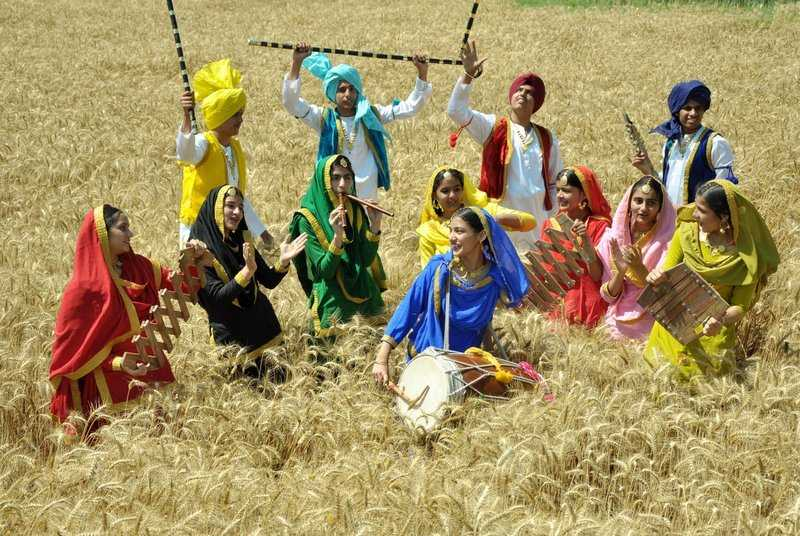

Festival Journey

Experience the Colors, Lights, and Traditions of India’s Celebrations
India is a land of diverse cultures, and its festivals reflect the country’s rich traditions, history, and spiritual beliefs. Each festival brings people together through joyous celebrations, rituals, and stories that have been passed down for generations. The Festival Journey takes you on an interactive and immersive experience, allowing you to explore India’s most vibrant festivals and their significance.
Why Celebrate Festivals?
Festivals in India are not just about rituals; they represent:
Unity and Togetherness – Bringing families and communities closer.
Cultural Heritage – Preserving traditions that have existed for centuries.
Spiritual Significance – Honoring gods, nature, and historical events.
Joy and Celebration – Spreading happiness through dance, music, and feasts.
Major Festivals of India
Diwali – The Festival of Lights
Celebrated to mark the return of Lord Rama to Ayodhya after defeating Ravana.
Homes are decorated with lamps (diyas), rangolis, and fireworks.
Families exchange sweets and gifts, and prayers are offered to Goddess Lakshmi for prosperity.
Holi – The Festival of Colors
Celebrates the victory of good over evil and the arrival of spring.
People play with colors, dance, and enjoy festive sweets like gujiya.
The story of Holika and Prahlad symbolizes faith and devotion.
Navratri & Durga Puja – The Victory of the Goddess
A nine-day festival dedicated to Goddess Durga’s triumph over the demon Mahishasura.
In North India, people observe fasting, perform Garba and Dandiya dances.
In West Bengal, grand Durga Puja celebrations include beautifully crafted idols and cultural performances.
Eid-ul-Fitr – The Festival of Breaking the Fast
Celebrated at the end of Ramadan, the Islamic month of fasting.
Families gather for prayers, feasts, and exchange of gifts.
Traditional dishes like seviyan (sweet vermicelli) are enjoyed.
Christmas – Celebrating the Birth of Jesus Christ
Marks the birth of Jesus Christ with church services, carols, and festive decorations.
People exchange gifts and enjoy special Christmas delicacies.
Homes and streets light up with Christmas trees and nativity scenes.